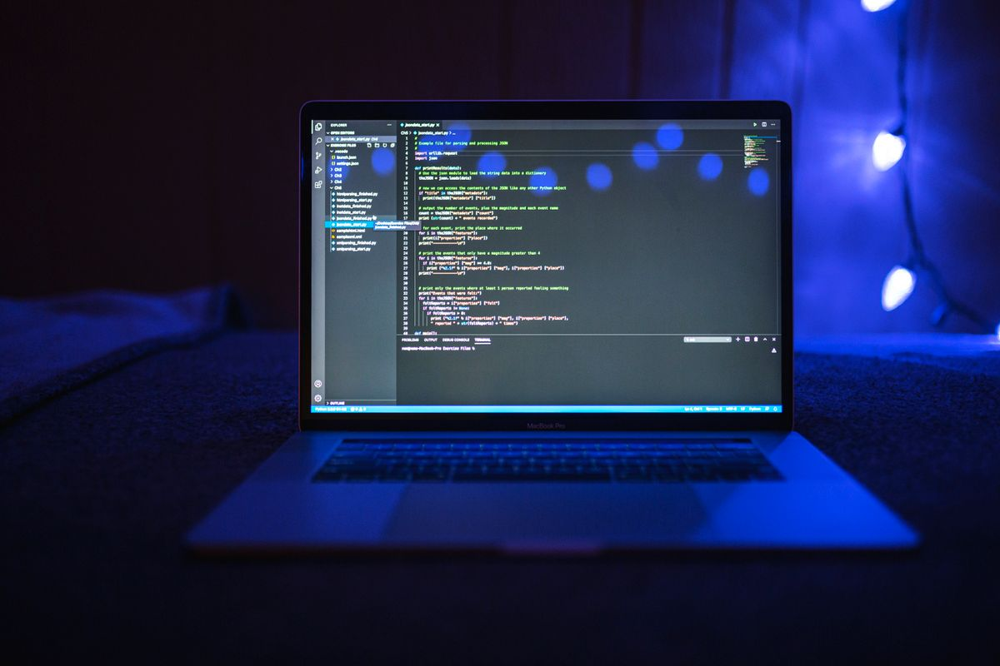
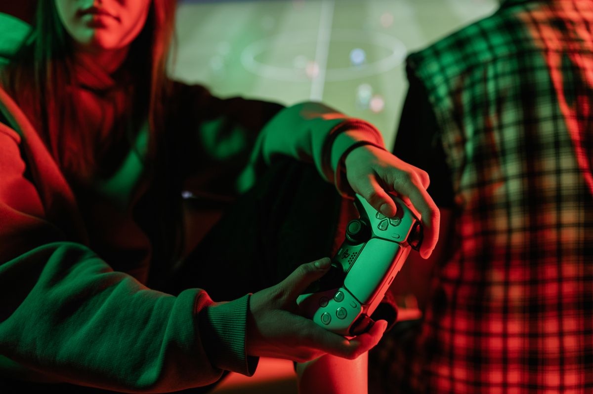
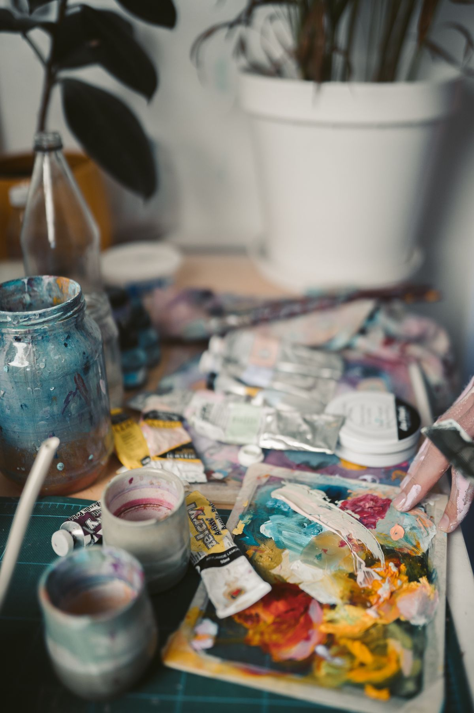

Мої захоплення
Програмування, відеоігри та творчість — те, що мене цікавить і надихає.


Програмування
Мені подобається створювати вебсторінки та бачити, як код перетворюється на інтерфейс.


Відеоігри
Ігрові світи допомагають мені відпочивати, розвивати уяву та знаходити нові ідеї.


Творчість
Кольори й візуальні образи надихають мене експериментувати з оформленням власних проєктів.